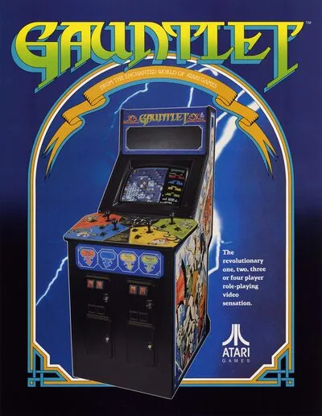

FBA (FinalBurn Alpha)
Gauntlet
- Año: 1985
- Desarrollador: Atari Games
- Género: Laberinto / Disparos
- Jugadores: 4 jugadores
JUGABILIDAD
Los jugadores, hasta cuatro en una misma cabina, pueden seleccionar entre cuatro personajes jugables basados en personajes comunes en historias de fantasía: El Guerrero, Mago, Valquiria o Elfo. Cada personaje tiene sus propias fortalezas o debilidades. Por ejemplo, el Guerrero es más fuerte en combate mano a mano, mientras que el Mago tiene las magias más poderosas, la Valquiria tiene la mejor armadura y el Elfo es el más rápido.
Después de seleccionar un personaje, el juego cambia a una perspectiva aérea en tercera persona en un laberinto, donde el objetivo es encontrar y pasar por la salida de cada nivel. Una especie de objetos especiales pueden ser localizados en cada nivel, estos objetos pueden incrementar la salud del personaje, desbloquear puertas, ganar más puntos o pociones mágicas que pueden destruir todos los enemigos en pantalla.3
Los enemigos son una especie de monstruos basados en fantasías, incluyen fantasmas, demonios, hechiceros y ladrones. Cada enemigo es insertado en el nivel por su respectivo generador, los cuales pueden ser destruidos. Ya que no hay jefes en el juego, el enemigo más poderoso es "Death", quien no solo puede drenar la vida del personaje pero también es difícil de destruir.3
Mientras va progresando el juego, es necesario aumentar las habilidades para alcanzar la salida del nivel, con el éxito dependiendo de la voluntad de los jugadores para cooperar compartiendo comida y dirigiendo a los monstruos a lugares en donde pueden ser atacados de manera más conveniente.3 Aunque el contacto con enemigos reduce la vida del jugador, la vida también se reduce lentamente por sí sola, esto con la finalidad de crear un tiempo límite. Cuando la vida de un personaje llega a cero, el personaje muere. El personaje puede ser revivido en el lugar con vida llena gastando un crédito (insertando una moneda) en un corto periodo de tiempo después de haber muerto. Esto permite que hasta el jugador menos habilidoso pueda seguir jugando indefinidamente, eso si está dispuesto a seguir insertando monedas.
Además de tener la habilidad de tener cuatro jugadores a la vez, el juego es también reconocido por la voz del narrador, el cual está producido por el Texas Instruments TMS5220C speech chip.3 El narrador suele mencionar las reglas del juego, incluyendo "Shots do not hurt other players – yet", "Remember, don't shoot food!", "Elf – shot the food!", y "Warrior needs food – badly!" Ocasionalmente, el narrador comentará en batalla, diciendo "I've not seen such bravery!" o "Let's see you get out of here!" Cuando la vida de un jugador baja de 200, el narrador comenta "Your life force is running out", "Elf needs food", o "Valkyrie ... is about to die!"
Para acomodar los cuatro jugadores, el panel de control es más grande de lo usual. Cada jugador tiene un joystick y dos botones, uno para "atacar" (ataque de rango) y otro para "Magia". Con el botón de magia se inicia el juego. Después de la salida de Gauntlet, otros juegos empezaron a usar este diseño, así que fue una conversión popular para los nuevos juegos.
Es posible jugar la versión original del título con tiempo y vidas ilimitadas hipotéticamente, especialmente con el Guerrero y el Mago. Una actualización de ROM fue lanzada, reduciendo el "poder extra" y la "velocidad extra" que beneficiaban al Guerrero y el Mago y añadiendo una nueva dificultad basada en un contador de puntos. La nueva actualización hace más difícil el juego, por ejemplo, en 16,384 puntos, disminuye la cantidad de comida en los niveles y los monstruos salen más rápido. Así pues, esto significa que con el nivel de dificultad en 4, es casi imposible pasar los niveles 1-7 sin morir, la dificultad 4 está diseñada para que la comida recibida no le permita a los monstruos atosigar al jugador. Esto es porque el juego removió algunas obtenciones de comida al jugar en solitario; en dificultad 0, al menos un establecimiento de comida fue removido en cada uno de los niveles, en dificultad 4, de dos a tres ventajas de comida son removidas. Esto incrementó la dificultad del juego, a menos que la máquina esté en dificultad 0. En vez de eso, el juego ofrece una bonificación de comida a partir de tres jugadores juntos, (Con tres jugadores daba la cantidad de comida estándar mientras que con cuatro jugadores daba comida extra en puntos aleatorios). [cita requerida]
Esto fue refinado para Gauntlet 2, en donde la Valquiria y el Elfo no recibirían penalización de remover la comida y solo el Guerrero y el Mago tendrían esta penalización. Valquiria y Elfo recibirían toda la comida de la dificultad más puntos extra haciendo que la Valquiria reciba menas penalizaciones de comida en niveles más altos. El Elfo solo obtendría menos comida a partir de los niveles 6 y 7. El juego aun daba comida extra por tener a tres o cuatro personas jugando en la misma cabina.
Controles
Que el juego cargue (ahora se abre con MAME 2003), que B dispare, A haga magia y el jugador 2 entre con 2P.
Dos botones. No hay botón de empezar: cada jugador entra echando su moneda.
| Panel | Juego |
|---|---|
 | Disparar |
 | Magia |
 | Moneda y entrar (jugador 1) |
 | Moneda y entrar (jugador 2) |
+  | Salir del juego |
El panel en FBA (FinalBurn Alpha)

Longplay

Partida completa de la recreativa (51 min), de hirudov: Gauntlet [Arcade Longplay] (1985) Atari Games {rev 2}.